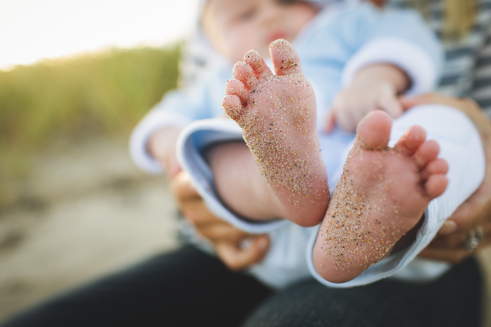

<!DOCTYPE html>
<html>
  <head>
    <meta charset="utf-8">

  </head>

</html>

<body>
  <h1><a href="index.html">현재의 삶</a></h1>

<h3>80 수명의 인생<h3>
<p>현재 평균 수명은 바야흐로 80이다. 내 나이가 되면 100세인생이라고들 한다.  현재 46세, 아직 반 이상일지 <br><br>반도 아닐지 모르는 상황에서 제2의 직업을 찾기 위해 노력한다고하는건 결코 허무맹랑한 이야기는 아닐 것이다. <br><br>다만 안정적인 직장인들은 힘들겠지만 자유로운 내 영혼은 충분히 그럴수 있는 시간과 환경이 주어져 있다.<br><br>형이 컴퓨터 프로그램을 한다. 큰딸 환희도 같은 길을 걸으려한다.나의 가장 소중한 보물도 그 길을 열러주고 <br><br>있다. 이러한 환경의 변화에 나만 모르쇠로 있을수는 없었다.
아직 이 나이에 시작한다고해도20년은 <br><br>충분히 배울수도 사용할수도 있는 나이이기에 코딩지도사라도 해볼까하는 마음에 그 이상을 할수도 있다는 <br><br>꿈을 품은채 시작하게된 코딩수업. <br><br>시작은 미미하데 그 끝은 가늠할수 엇는 희망을 품은채 오늘 하루도 게이름이 아닌 성실을 안고 배우며 <br><br>새로운 도전을 시작한다.</p>


</body>
